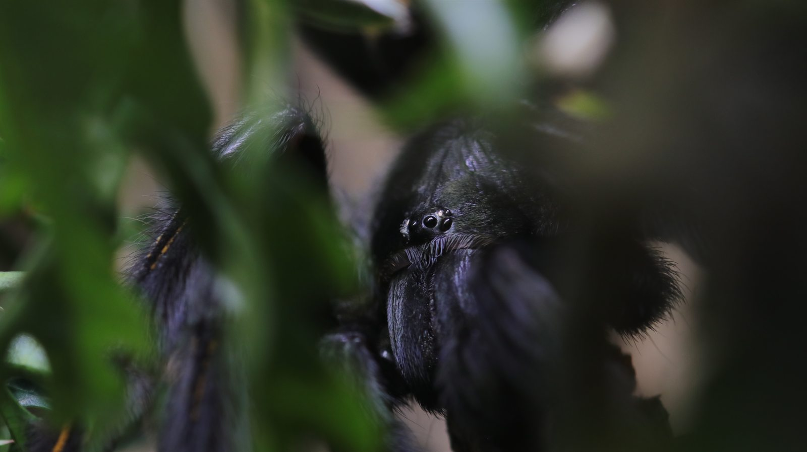
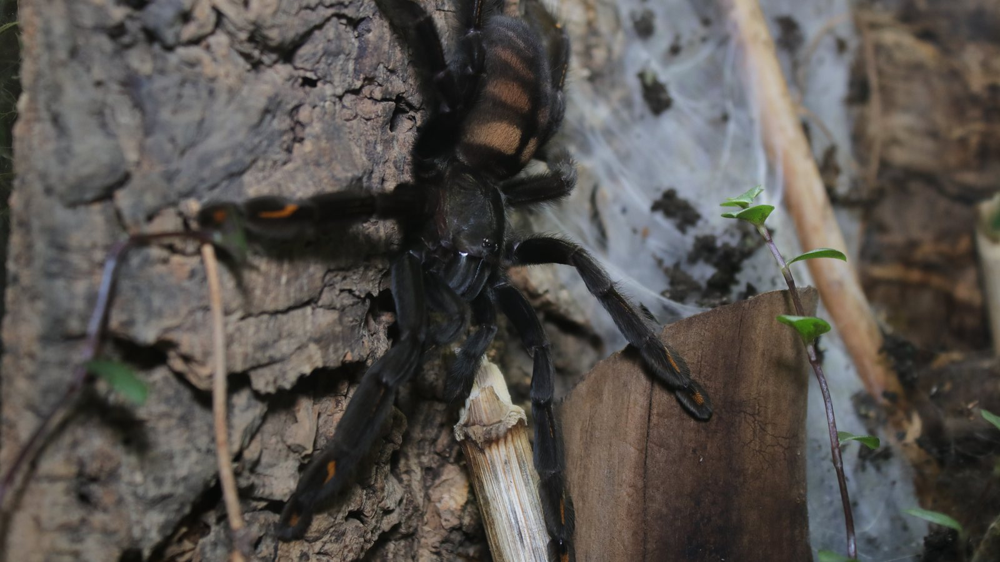
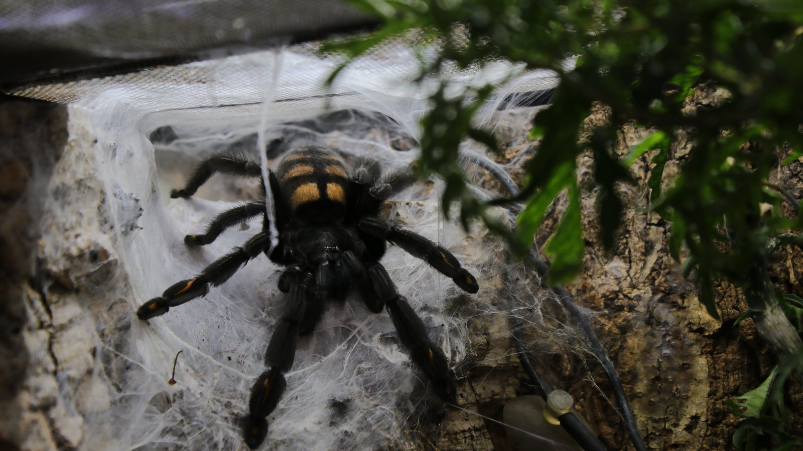
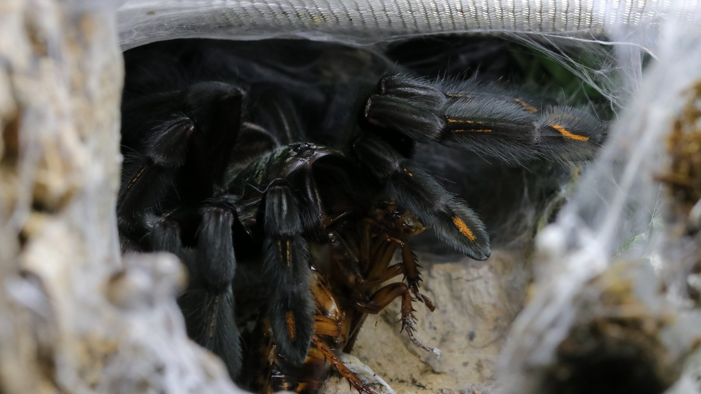
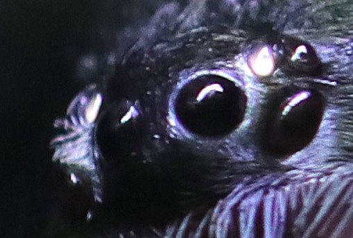

A northern South American tarantula in the arboreal genus Psalmopoeus. Clara’s photographs document her use of vertical bark and foliage in this collection. [1] [2]
Species profile · Clara
Psalmopoeus irminia
Meet Clara
Clara is the Psalmopoeus irminia currently in my care. Her photograph is one of the most atmospheric in the collection, placing her face between dark foliage and soft green light.

Scientific namePsalmopoeus irminia
FamilyTheraphosidae
Native rangeVenezuela, Guyana and Brazil
TaxonomyAccepted species
SexConfirmed female
In the wild
Natural history.
Orange markings contrast with the dark body. Clara’s photographs show the leg and abdominal pattern among bark and foliage.
Clara has vertical structure, a secure retreat, and foliage for cover. Her feeding and molt observations are presented as an individual record below.
Taxonomy and range
Psalmopoeus irminia is an accepted theraphosid recorded by the World Spider Catalog from Venezuela, Guyana and Brazil. Research on the genus describes Psalmopoeus as an arboreal lineage, providing the broader context for Clara’s use of vertical cover. [1] [2]
Burrows, shelter, and activity
Clara’s photographs and collection record show vertical structure, foliage and a concealed retreat. Research on Psalmopoeus provides an arboreal comparison at genus level. Her use of bark, cover and silk is followed as an individual observation. [2]
Feeding ecology
General spider biology explains how movement on a surface or silk can supply prey cues. Applying that to Clara’s concealed vertical routes is a keeper interpretation, not a species-specific field diet study. Her feeding responses and outcomes remain part of her individual record. [3]
Defence, senses, and movement
Psalmopoeus does not have urticating hairs. Speed, concealment, and a defensive posture when cornered make opening the enclosure the highest-risk moment, not the animal sitting quietly inside its retreat. [4]
Conservation context
Status, trade & uncertainty.
IUCN evaluates extinction risk; CITES regulates international trade. They answer different questions, and missing data should remain visible. [5] [6]
Assessment not verified
A species-level IUCN category has not been verified for this profile. This is an evidence gap here, not evidence of low extinction risk.
Not CITES-listed
The species was not found in the CITES Appendices valid from 5 March 2026, reviewed on 3 November 2026. [6]
What the evidence supports
Forest dependence and visibility in the pet trade make habitat and provenance relevant, but species-specific abundance, trend, and harvest data remain limited. [2]
Make provenance visible
Prefer documented captive-bred animals and preserve the chain of custody. Do not convert an uncertain country label into precise locality data.
Sources reviewed 3 November 2026. Historical assessment dates are retained. Assessment uncertainty is not evidence of low risk; national requirements may differ from CITES.
Life in the collection
Meet Clara.
Clara is the individual behind this profile. Her foliage-rich enclosure photography and personal Codex record add a keeper’s view to the documented range and taxonomy of Psalmopoeus irminia.




From Instagram
Posts & reels.
Personal observations
From the Codex.
Introvertebrates Codex
Clara · care history
Time in care, feeding records, moults and measurements. These are observations from the Introvertebrates collection, not species-wide averages.
Collection records are not available here yet.
Private notes and identifying details are kept off the website.
Continue exploring
Related profiles.


Read further
Sources.
- 1. World Spider Catalog — Psalmopoeus irminiaView the source.
- 2. Psalmopoeus taxonomy and conservation studyView the source.
- 3. Australian Museum — prey capture and feeding (general spider biology)View the source.
- 4. Bertani & Guadanucci (2013) — morphology, evolution and usage of urticating setaeView the source.
- 5. IUCN — Red List Categories and Criteria, version 3.1 (assessment definitions)View the source.
- 6. CITES — Appendices I, II and III (valid from 5 March 2026)View the source.